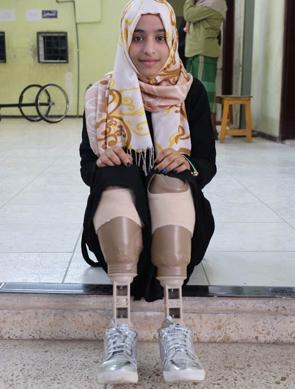

Life In Yemen
Horrors of Hajjah

At first sight, Hajjah seems a quiet place to live as a child. The city, located 127 kilometers northwest of Sana'a, the capital of Yemen, offers breathtaking views over the surrounding mountains and green valleys, which used to attract many visitors before the conflict escalated in 2015 and before Yemen became one of the worst places on Earth to be a child. More than three years after the beginning of the current war, the situation keeps worsening, with children being the primary victims of this conflict.
Ayah's Story
“We were deeply sleeping as usual at 12 o’clock at night, and suddenly, a loud explosion shook the house, the sound of the explosive deafened my ears, and I couldn’t hear what was happening around me. I rushed to my children’s room and the sight was shocking. My little children were covered in dust and crying with fear and terror. One of my children pointed to Ayah who I found covered with her blood suffering from serious injuries. After that day, I took her to the nearest hospital and through a miracle, Ayah’s condition stabilized, but sadly she has already lost her left foot. I feel pain every day as I see her missing foot. My heart aches. Ayah is constantly asking me if she can walk back, that question makes me miserable.”
-Nageeb and Amani Najib, Ayah’s Parents | Aden, Yemen
Aswan: the Cinderella of Yemen

Aden, Yemen, 13 November 2018 - It was one of the days of war in Yemen, the clock was indicating that it was 6 am in the morning. Aswan, a 16-year-old Yemeni girl, woke up terrified with bullets and shells shaking her house and all the neighboring houses in Al-Qabaytah district of Lahj province. With her parents and 8 siblings, Aswan lives a simple life like most of the Yemeni people whose life’s have been dramatically changed as a result of the ongoing conflict in the country for almost four years.
“I was very frightened, listening to the sounds of shells as they approached my home. On this day, I was supposed to attend my mathematics exam in school, but with all these clashes in the area all the exams were canceled and all the schools closed down,” says Aswan.
Out of nowhere a mortar shell fell on Aswan’s family house devastating everything and the shrapnel scattered all over the house. Sami, Aswan’s elder brother, narrates: "The smoke was all over the house and the screaming was filling up the atmosphere. I rushed to see my family and I was shocked by what I witnessed, I saw Aswan covered with her blood and she lost both legs; she was unconscious, I couldn’t believe the scene and I was stunned and shocked for a while before I carried her on my shoulders to take her to the hospital”.